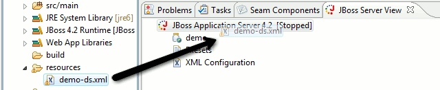
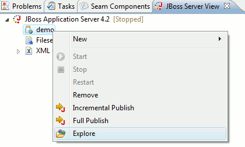
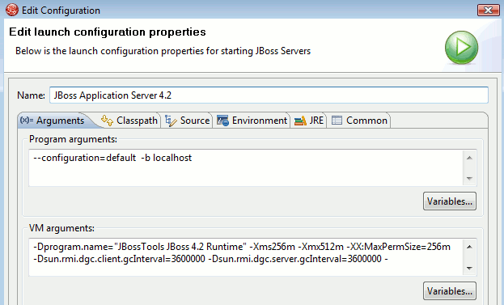

< Main Index Visual Page Editor >
Views |
|
|
Drag'n'Drop to JBoss Server View |
JBoss Server View now supports drag'n'drop of deployable and runnable projects/resources. This means that if you...
 |
|
|
|
|
'Explore' shortcut in Server view |
There is now an "Explore" item in the context menu of JBoss servers and its deployed resources/projects. This action uses the native OS file explorer to browse the deploy destination.  |
Setup/Configuration |
|
|
More strict server launches |
To avoid inconsistencies between server's and their configured runtime the Launch Configurations for JBoss Servers are now more strict in enforcing the configured values in the server. For example if you change the launch configuration program arguments to "-c myConfig" but do not change the targeted runtime configuration then your program arguments will be ignored. The server runtime "wins" so to speak. This ensures consistency and if you i.e. change the location of the runtime your launch configurations will automatically pick that up. Values not controlled by the server and its runtime setup will be passed on unaltered.  |